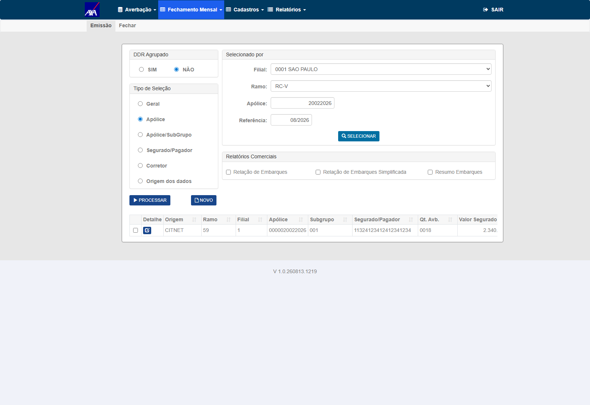
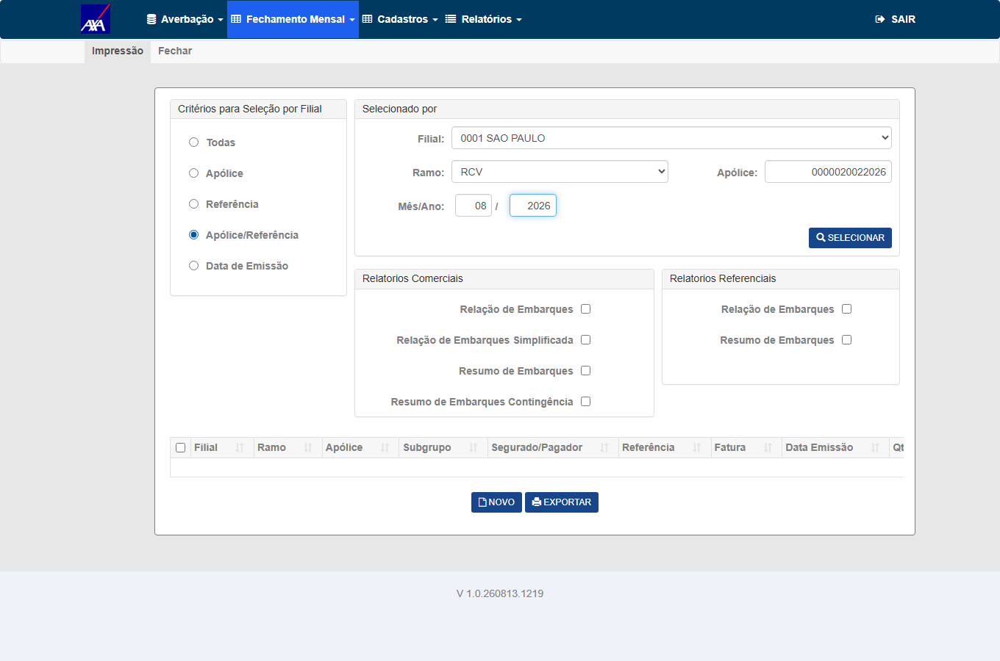
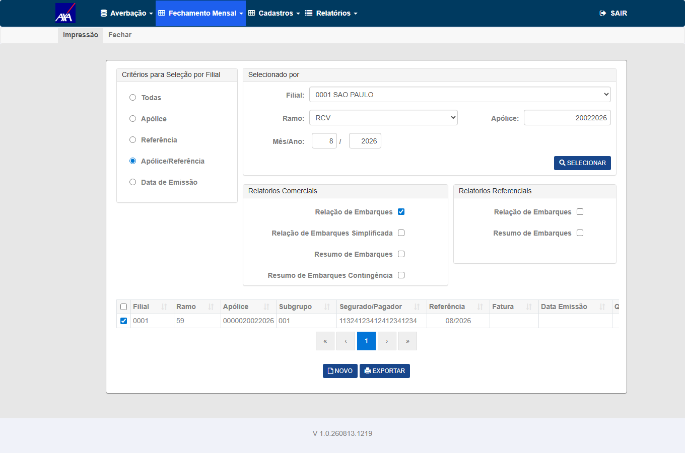
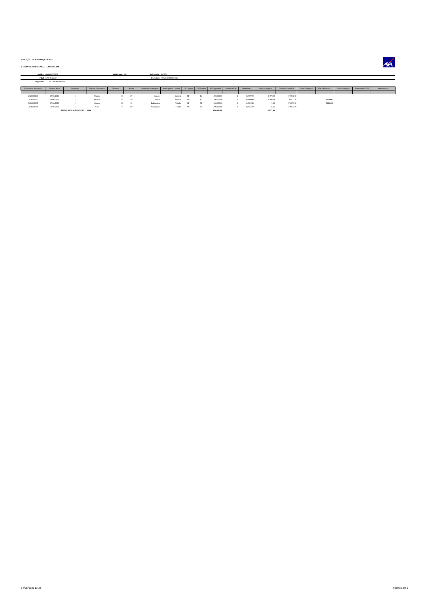
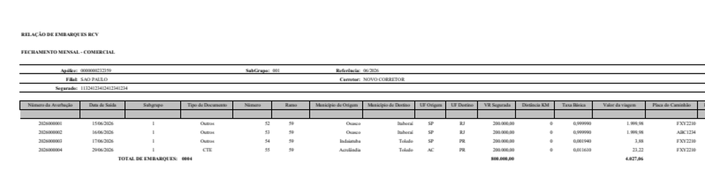
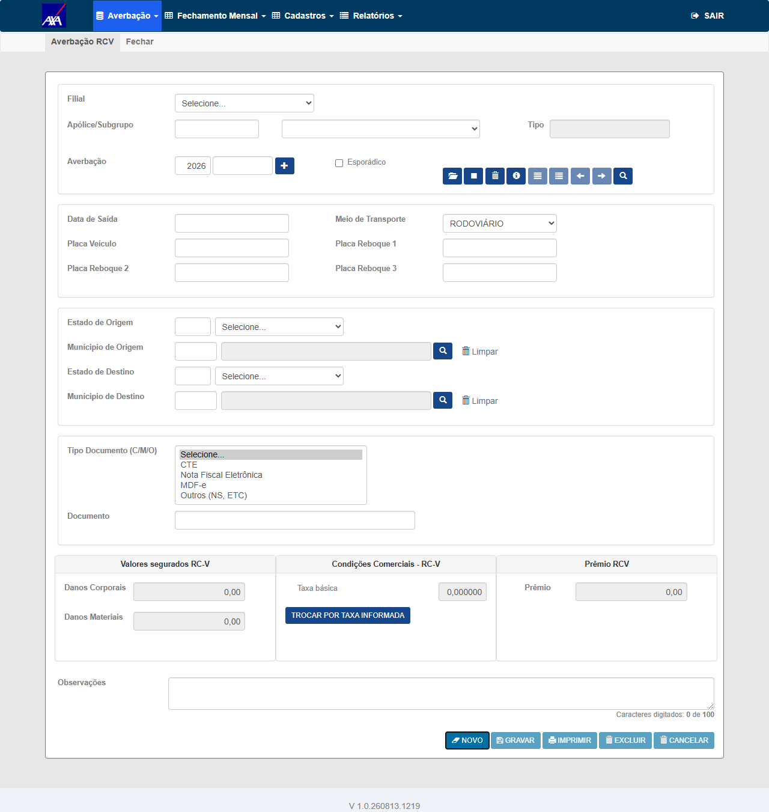
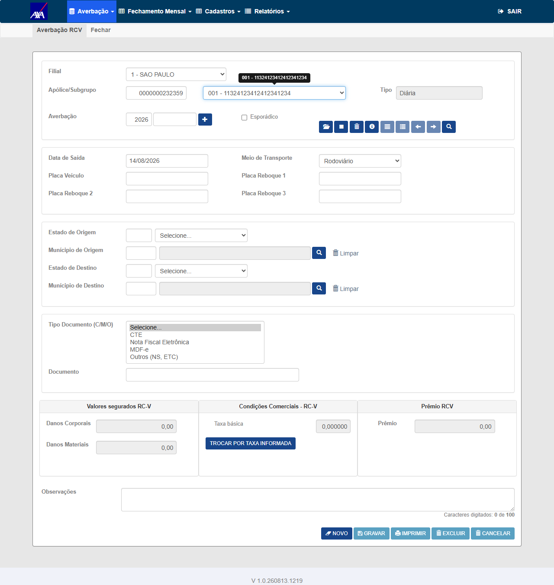
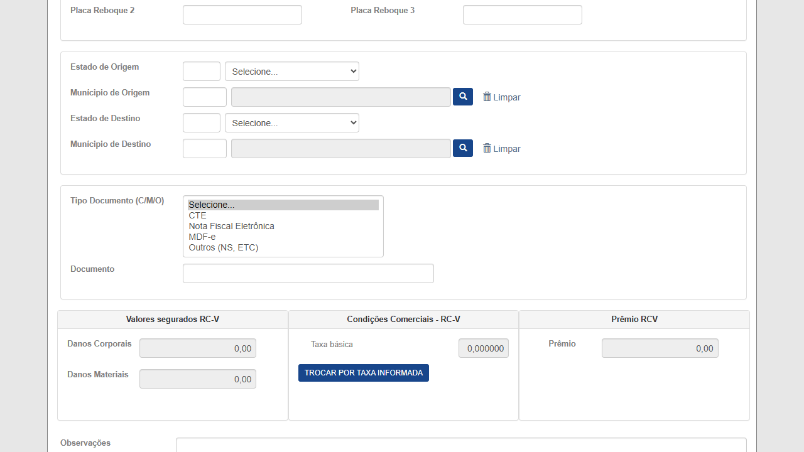

O domínio de e_doc_ebq não foi lido do relatório (isso tornaria o teste uma
tautologia). Veio da tela onde o usuário escolhe o tipo — o formulário de averbação RCV
(NSSegApis/client/nsseg-portal/src/pages/averbacoes/ramo59/Ramo59FormPage.tsx:6-12):
e_doc_ebq | Rótulo no cadastro (fonte de verdade) | Rótulo no relatório antes do fix (04/08) | Situação hoje |
|---|---|---|---|
C | CT-e — Conhecimento de Transporte Eletrônico | CTE | ✅ ok — inalterado pelo fix |
N | NF-e — Nota Fiscal Eletrônica | NF Eletrônica | ✅ ok — inalterado pelo fix |
O | — (não está no formulário; vem do Conversor/legado) | Outros | ✅ ok — inalterado pelo fix |
M | MDF-e — Manifesto Eletrônico de Documentos Fiscais | (vazio) — era o defeito do card | ✅ passou a imprimir MDF-e desde o PR !1532 (04/08); medido em 07/08 — seção 3.2. Execução formal dos CTs segue PENDENTE. |
A | AWB — Air Waybill | (vazio) | ⚠️ segue sem tradução — mesma classe, fora do card |
D | D — Outro documento | (vazio) | ⚠️ segue sem tradução — mesma classe, fora do card |
⚠️ Note a assimetria de O × D: o relatório espera O para "Outros", mas o
formulário emite D para "Outro documento". Averbação criada pelo portal novo com "Outro documento"
aparece em branco.
In scope: coluna "Tipo Documento" da Relação de Embarques do Fechamento (ramo 59,
todas as seguradoras) — tradução de e_doc_ebq='M' para "MDF-e"; regressão dos códigos já
traduzidos (C, N, O); tratamento de código vazio; e a consistência com a
Prévia, que usa o mesmo campo.
Out of scope: demais colunas do relatório; o defeito pré-existente do
RelatorioDomain.cs com N (registrado aqui como achado, a decidir em card próprio); o
HTTP 500 do Tipo de Seleção "Todas" na TOKIO (defeito à parte, ver nota de automação).
Ramo: 59 (RC-V), conforme o CA. Ambientes: CITWEB HML — TOKIO e NSTECH (onde existe massa MDF-e) + AXA e NSTECH para a regressão dos tipos existentes.
Credenciais: sempre via .env
(HML_<SEGURADORA>_CITWEB_USER / _PASS) — nunca literal no script ou no plano.
Navegação (por clique, nunca por URL direta): login → Nacional →
Fechamento Mensal → Impressão → Tipo de Seleção
"Apólice/Referência" → informar apólice + referência → Selecionar → marcar a linha
do fechamento → Relação de Embarques → exportar .xlsx.
Contagens de tb_mov_avb_rcv_cit por e_doc_ebq (movimento fechado exige
u_fch_mes <> 0; a Relação do Fechamento só vê fechado):
| Cenário | Tenant | Massa exata |
|---|---|---|
| MDF-e (núcleo) | TOKIO | apólice 52831830001 · subgrupo 1 · referência 202605 ·
fechamento 29 → 903 averbações, 100% e_doc_ebq='M'
(zero de outros tipos). Em 04/08, antes do fix: 903 linhas com a coluna vazia — pós-fix,
903/903 saem com MDF-e (medição de 07/08, seção 3.2). |
| MDF-e (2º tenant, CA "todas as seguradoras") | NSTECH | apólice 19122025 · subgrupo 1 · referência 202512 ·
fechamento 13 → 6 averbações 'M' |
Regressão C e O | AXA | 13.582 com 'C' · 14.708 com 'O' |
Regressão N | NSTECH | 15.660 com 'N' |
| Borda — código em branco | TOKIO | 7 averbações com e_doc_ebq=' ' (espaço) |
Distribuição total de MDF-e na TOKIO: 903 em fechamento processado + 3.200 em movimento aberto (estes últimos servem à Prévia, CT-REB-008).
Quando este plano foi escrito (04/08) o fix ainda não estava em hml. O PR !1532
(7999-relacao-embarques-mdfe-hml → hml, merge f01c489af) já está
completed, e li o código direto do branch — não do clone local, que está em 14/05 e não tem o
fix. O fix criou /Domain/TipoDocumentoEmbarqueRcvLabel.cs, chamado nos dois relatórios:
RelatorioFechamentoDomain.cs:1646 e RelatorioPreviaDomain.cs:2808 — ambos na coluna 4,
o que confirma a paridade Fechamento×Prévia exigida pelo CA.
e_doc_ebq | Rótulo impresso | Linhas em HML | Bases |
|---|---|---|---|
C | CTE | 43.941 | 15 |
N | NF Eletrônica | 15.664 | 2 |
O | Outros | 72.270 | 16 |
M | MDF-e | 4.163 | 5 — TOKIO, NSTECH, AXA, KOVR e KOVR-ALFA |
default | "" (vazio) |
7 (código em branco) | 1 — TOKIO |
Três consequências para a execução:
- A dúvida de vocabulário está respondida pelo próprio código: o que subiu imprime
"MDF-e"— o vocabulário do portal NSSeg, não"Manifesto"(CITNET) nem"Outros". Resta à Produtos confirmar, não decidir do zero. Atualização de 05/08: nem a confirmação é mais necessária — o CA do #7980, criado pela própria Produtos em 03/08, já fixa o vocabulário em"MDF-e"no combo e nos relatórios. O que segue pendente é o aval do plano (Gate 2), não a decisão do rótulo. - Massa de MDF-e existe em 2 tenants além dos previstos (KOVR e KOVR-ALFA), o que dá folga ao CT-REB-002 se a TOKIO estiver instável — ela tem o HTTP 500 do Tipo de Seleção "Todas" já registrado aqui.
- O
switchcompara string e é case-sensitive, e odefaultdevolve vazio — isto é, um código novo volta a produzir exatamente o defeito que abriu o card, silenciosamente. Levantei isso como risco e fui medir antes de reportar: não se materializa — varri as 16 bases com movimento RCV (não só as 6 de 04/08) e não existe minúsculo nem 5º código. Quanto aos 7 registros em branco da TOKIO: pela leitura do código (default→"") e pelos dados, permanece esperado que continuem saindo com a coluna vazia — comportamento correto para um movimento sem tipo de documento. ⚠️ Isto é conclusão de leitura de código e de banco, não de execução: quem confirma é o CT-REB-006 — a contraprova obrigatória do risco Alto da seção 7 —, que segue PENDENTE.
Ao homologar o PBI #7980 ("Incluir opção MDF-e no campo Tipo Documento da Averbação RCV" — a entrada; este card é a saída), dois CTs de regressão cruzada caíram exatamente sobre a coluna que este PBI entregou. Ambos passaram em 07/08. Registro aqui por rastreabilidade: é evidência de outro card e não substitui a execução formal destes 10 CTs.
| O que foi medido | Onde | Resultado |
|---|---|---|
Relação de Embarques da PréviaRelatorioPreviaDomain.cs:2804 |
AXA HML · build V 1.0.260806.1708apólice 3112027 ·
ref 08/2026 |
10 de 10 linhas com a coluna D correta, conferidas linha a linha contra o banco pelo
número da averbação — M→MDF-e, C→CTE, N→NF Eletrônica,
O→Outros. Zero divergências. |
Relação de Embarques do FechamentoRelatorioFechamentoDomain.cs:1642 |
TOKIO HML · build V 1.0.260807.1214apólice 52831830001 ·
fechamento 29 |
903 de 903 linhas com MDF-e, em movimento fechado real e em volume.
Zero divergências. |
ℹ️ Sobre os números de linha desta tabela (1642 /
2804): são a numeração conforme lida em 07/08, pós-fix, e vêm transcritos do registro do
#7980. A seção 3.1 cita 1646 / 2808 nos mesmos arquivos, lidos em 05/08; a seção 8 e o box
do topo citam 1643 / 2807, que são as posições pré-fix. É o mesmo
call site em três leituras — a posição exata não altera nenhum veredito.
Onde estão os arquivos: os .xlsx exportados estão anexados ao card
#7980 e a conferência linha a linha está no plano dele (CTs 012 e 013). Nenhum arquivo foi anexado
a este card — por isso esta pasta não tem evidencias/.
O que isto NÃO faz: não aprova CT nenhum deste plano. CT-REB-001 e CT-REB-008 seguem PENDENTE — o Gate 2 nunca foi aprovado e a execução formal não começou. Se a Produtos aprovar o reaproveitamento proposto no card em 07/08, estes dois passam a APROVADO citando o anexo de origem no #7980; até lá o placar do topo permanece 0 aprovados · 0 reprovados · 10 pendentes.
testes-automatizados/sprint-11-citweb/bug-7884/ct_fmr_009_relatorios_fechamento.py já cobre
exatamente esta tela (Nacional → Fechamento Mensal → Impressão, export da Relação de Embarques sobre fechamento
processado), é multi-tenant por dict TENANTS e valida o .xlsx com openpyxl. A execução
destes CTs estende esse script em vez de criar outro do zero.
⚠️ Armadilha herdada e já documentada nele: com Tipo de Seleção "Todas" o POST
/Nacional/RelatorioFechamento/Selecionar responde HTTP 500 na TOKIO (na AXA responde
302). Por isso a navegação usa "Apólice/Referência". Esse 500 é defeito à parte — não confundir com
este card.
⚠️ Evidência obrigatória de CT de relatório: o próprio arquivo .xlsx salvo e
validado (não-vazio, formato válido, nº de linhas e o valor da coluna), anexado ao card — não basta screenshot nem
HTTP 2xx.
Grupo 1 — MDF-e: o núcleo do card
2▼Objetivo
CA1: movimento MDF-e aparece como "MDF-e" no Excel. Este é o CT que discrimina o fix: antes do fix a coluna saía vazia.
Pré-condições
52831830001 · subgrupo 1 · referência 202605 · fechamento 29 — 903 averbações com e_doc_ebq='M', confirmadas por SQL em 04/08. Fix implantado em HML desde 04/08/2026 (PR !1532 completed; #8007 Done; card em "Pronto para homologação") — a pré-condição de ambiente está satisfeita.0000000059001 · sub 001 · ref 08/2026 · fechamento 42.A evidência é o arquivo, e ele foi aberto e lido: COM-EMB-RCV-0000000059001-001-08-2026-00042.xlsx (18.464 B, aba RelacaoEmbarque), coluna Tipo de Documento (índice 3), 2 de 2 linhas conferidas contra o banco:
u_avb 2026000004 banco C exibido CTE u_avb 2026000005 banco M exibido MDF-e
⛔ Esta massa não existia — foi criada, e a criação é parte do resultado. Em 12/08 havia zero averbações fechadas com M nas duas bases, coerente com o #7981 (o servidor recusa gravar M, então nenhuma linha M passou por fechamento). Rodei o Fechamento Mensal via massa_fechar_subgrupo_com_mdfe.py. Dois aprendizados que ficam:
- O fechamento seleciona pela DATA DE SAÍDA, não pela competência gravada. As linhas
CeMtinhamd_ano_mes_ref=202607mas saída em agosto (06/08 e 07/08) — por isso ficaram fora do fechamento de julho e entraram no de agosto. E a emissão corrigiu od_ano_mes_refpara 202608, o que confirma a regra; - Os fechamentos são sequenciais. Tentei primeiro a AXA (apólice 1778533048969, 08/2026) e a tela recusou: "Existem Fechamentos não realizados a partir de 01/05/2026 referentes a: 07/2026 06/2026 05/2026". Nada foi mutado ali — o print está anexado.
O que este CT NÃO cobre: o rótulo de N e do código vazio no fechamento. A massa para eles já existe (fechamento 41 da mesma apólice, ref 07/2026: 14 linhas O e 7 com tipo NUL) — falta medir, e é o próximo passo dos CT-REB-004 e CT-REB-006.


Passos
- Login no CITWEB TOKIO HML (credenciais do
.env) - Clicar em Nacional → Fechamento Mensal → Impressão
- Tipo de Seleção = Apólice/Referência; apólice
52831830001, referência05/2026; clicar Selecionar - Marcar a linha do fechamento
29e clicar Relação de Embarques; exportar.xlsx - Abrir o arquivo e ler a coluna D — "Tipo Documento" em todas as linhas
- Cruzar com o banco:
SELECT e_doc_ebq, COUNT(*) FROM tb_mov_avb_rcv_cit WHERE u_apo_pnc=52831830001 AND d_ano_mes_ref=202605 AND u_fch_mes=29 GROUP BY e_doc_ebq
Resultado Esperado
MDF-e na coluna Tipo Documento — 0 (zero) em branco. O texto deve ser exatamente o do cadastro (MDF-e), não "MDFE", "Manifesto" nem "Outros". ⚠️ Se vier vazio, o fix do PR !1532 não alcançou este tenant/build; se vier "Outros", o fix classificou errado.smt-hom-citweb-tokio e a massa usada aqui não existe mais: a apólice 0000000059001 não tem mais o subgrupo 001 (só 002, 003 e 005), os fechamentos 42 desapareceram, e hoje não há nenhuma averbação M fechada na tokio — as 3.202 que existem estão todas em movimento aberto (eram 4.103 em 04/08). Isto não invalida a evidência: o arquivo acima foi produzido pelo próprio sistema em 12/08/2026, no build registrado, e está anexado. O que muda é que repetir este CT hoje exige recriar a massa — e é por isso que fica registrado aqui, em vez de alguém gastar um ciclo tentando reproduzir e concluindo "sem dados". Objetivo
CA3: "válido para todas as seguradoras, ramo 59". O fix é CORE, então precisa valer em outro tenant — e uma evidência de um tenant não vale pelo outro (lição registrada no #7762).
Pré-condições
19122025 · subgrupo 1 · referência 202512 · fechamento 13 — 6 averbações com e_doc_ebq='M'.Passos
- Repetir os passos do CT-REB-001 no tenant NSTECH com a massa acima
- Comparar o rótulo obtido com o da TOKIO — devem ser idênticos
Resultado Esperado
MDF-e, com o mesmo texto obtido na TOKIO. Divergência de rótulo entre seguradoras num fix CORE é REPROVADO.Medido em 14/08/2026 no momento do FECHAMENTO, AXA HML · build V 1.0.260813.1219 (pós-fix) · apólice 0000020022026 · sub 001 · ref 08/2026 · fechamento 00547 · filial 0001 SAO PAULO. Navegação por clique desde o login: Nacional → Fechamento Mensal → Impressão → Apólice/Referência → Relação de Embarques → Exportar.
⛔ A massa não existia como fechada — foi CRIADA, e a criação é parte do resultado. Em 14/08 a AXA tinha 0 averbações M fechadas (as 12 M estavam em movimento aberto). Rodei a Emissão do Fechamento Mensal (massa_fechar_subgrupo_com_mdfe.py --tenant axa --apolice 20022026 --ref 08/2026 --subgrupo 1) sobre um subgrupo que reunia os quatro códigos abertos (M6 · N2 · C4 · O6) → nasceu o fechamento 547 com 18 averbações. Cancelamento disponível: ct_fmr_004_persistencia_emissao.py --tenant axa --apolice 20022026 --ref 08/2026 --cancelar-apenas 547.
18 de 18 linhas conferidas contra o banco pela chave Número da Averbação — as 6 linhas M saem MDF-e, e no mesmo arquivo os demais códigos saem distintos (prova anti-hardcode: um único rótulo fixo não produziria 4 rótulos corretos):
mapa observado (código → rótulo) · divergências: 0 C (4 linhas) → CTE N (2 linhas) → NF Eletrônica M (6 linhas) → MDF-e O (6 linhas) → Outros
📄 COM-EMB-RCV-0000020022026-001-08-2026-00547.xlsx (10.185 B, aba RelacaoEmbarque, coluna Tipo de Documento índice 3). Arquivo aberto e lido linha a linha — não é print de tela nem HTTP 2xx.



Grupo 2 — Regressão: "tipos existentes continuam iguais"
3▼Objetivo
CA2: os tipos já existentes não podem mudar. C é o mais usado (13.582 averbações só na AXA).
Pré-condições
e_doc_ebq='C' (13.582 disponíveis; a apólice/referência exata é descoberta na execução por SQL, sem ID fixo).Passos
- Descobrir por SQL um fechamento (
u_fch_mes <> 0) com averbações'C' - Gerar a Relação de Embarques desse fechamento e exportar
.xlsx - Conferir a coluna Tipo Documento linha a linha contra o
e_doc_ebqdo banco
Resultado Esperado
e_doc_ebq='C' exibe CTE — texto inalterado em relação ao comportamento anterior ao fix.C continua exibindo CTE depois do fix do MDF-e
Medido em 14/08/2026 no momento do FECHAMENTO (que é o momento deste card), AXA HML · build V 1.0.260813.1219 · apólice 0000000232359 · sub 001 · ref 06/2026 · fechamento 00533 · filial 0001 SAO PAULO. Navegação por clique desde o login: Nacional → Fechamento Mensal → Impressão → Apólice/Referência → Relação de Embarques → Exportar.
O que o arquivo diz, linha a linha — 4 de 4 linhas conferidas contra o banco pela chave Número da Averbação, nenhuma averbação do banco ausente no arquivo:
| Averbação | e_doc_ebq no banco | Coluna Tipo de Documento no arquivo |
|---|---|---|
2026000001 | O | Outros |
2026000002 | O | Outros |
2026000003 | O | Outros |
2026000004 | C | CTE |
Rótulos distintos na coluna: ["CTE", "Outros"] · divergências: 0 · deslocamento de rótulo (rótulo de outro código): 0 · colapso de rótulos: 0.
Por que esta massa e não a de 13.582 linhas: ter C e O no mesmo arquivo, com rótulos diferentes, é o que separa "o mapeamento funciona" de "o rótulo está fixo". Um arquivo com um único código não distingue os dois casos — e é justamente o risco que o fix do MDF-e introduziu ao tocar o switch.
📄 COM-EMB-RCV-0000000232359-001-06-2026-00533.xlsx (8.955 B, aba única RelacaoEmbarque A1:T15, coluna Tipo de Documento índice 3, rodapé TOTAL DE EMBARQUES: 0004 · 800.000,00 · 4.027,06). Arquivo aberto e lido — não é print de tela nem HTTP 2xx.
⚠️ Nota honesta sobre o validador reusado: o script base (do #7980) imprimiu REPROVADO nesta rodada porque o critério dele exige uma linha M/MDF-e, que esta massa não tem por construção. Para este CT o objeto é C → CTE, e a tabela linha a linha acima está 4/4. O veredito saiu da tabela, não do rótulo impresso pelo script alheio.
⚠️ Este CT estava marcado APROVADO sem evidência nenhuma no bloco até 14/08 — o motor revisar_entrega.py reprovava por isso. Foi reexecutado, não re-rotulado: os artefatos abaixo são desta rodada (14/08/2026), com massa e build registrados.
0001 SAO PAULO, ramo RCV, apólice 0000000232359, referência 06/20260000000232359/001/06-2026 marcada na grade e Relação de Embarques (Relatórios Comerciais) selecionada, no estado pós-Exportar com o download disparado
.xlsx baixado aberto (página inteira), com o cabeçalho do relatório e as 4 linhas de embarque
2026000001/02/03 = Outros, 2026000004 = CTE (clique para ampliar)Objetivo
CA2 para o código O (14.708 na AXA). É o candidato natural a ser "reaproveitado" por um fix apressado para o MDF-e — daí a prioridade P1.
Pré-condições
e_doc_ebq='O' (14.708 disponíveis).O exibe "Outros"medido em 12/08/2026 no momento do FECHAMENTO: as 14 linhas com e_doc_ebq = O exibem Outros, sem exceção.
O cadastro escreve Outros (NS, ETC) e o relatório escreve Outros — o CT pede "Outros", então isso atende. Fica registrado que a abreviação existe aqui também, e é a mesma classe de decisão que a PO tomou no #7996 para o rótulo de N.
📄 COM-EMB-RCV-0000000059001-001-07-2026-00041.xlsx (20.465 B, aba RelacaoEmbarque, coluna Tipo de Documento índice 3) · 21 de 21 linhas conferidas contra o banco. Massa: TOKIO · apólice 0000000059001 · sub 001 · ref 07/2026 · fechamento 41.

Passos
- Mesma sequência do CT-REB-003, filtrando um fechamento com
'O'
Resultado Esperado
'O' exibem Outros. ⚠️ Se passarem a exibir MDF-e, o fix confundiu os dois códigos — REPROVADO.smt-hom-citweb-tokio e a massa usada aqui não existe mais: a apólice 0000000059001 não tem mais o subgrupo 001 (só 002, 003 e 005), os fechamentos 41 desapareceram, e hoje não há nenhuma averbação M fechada na tokio — as 3.202 que existem estão todas em movimento aberto (eram 4.103 em 04/08). Isto não invalida a evidência: o arquivo acima foi produzido pelo próprio sistema em 12/08/2026, no build registrado, e está anexado. O que muda é que repetir este CT hoje exige recriar a massa — e é por isso que fica registrado aqui, em vez de alguém gastar um ciclo tentando reproduzir e concluindo "sem dados". Objetivo
CA2 para o terceiro código traduzido. O card não o menciona, mas ele existe e é o mais volumoso na NSTECH (15.660).
Pré-condições
e_doc_ebq='N' (15.660 disponíveis).Passos
- Mesma sequência do CT-REB-003 no tenant NSTECH, filtrando
'N'
Resultado Esperado
'N' exibem NF Eletrônica, texto inalterado.N continua exibindo NF Eletrônica num build com o fix do MDF-e
Medido em 14/08/2026 no FECHAMENTO, AXA HML · build V 1.0.260813.1219 (pós-fix) · apólice 0000020022026 · sub 001 · ref 08/2026 · fechamento 00547. Mesma rodada e mesmo arquivo do CT-REB-002 — de propósito: um export que contém N e M na mesma tela prova que o fix do MDF-e não deslocou o rótulo do NF-e.
⚠️ Por que AXA e não NSTECH. A pré-condição pedia NSTECH (onde estão as 15.660 linhas N), mas a NSTECH está em build V 1.0.260703.1628 — anterior ao fix (deploy 04/08) — e a Relação de Embarques daquela base responde "Não foram localizados dados para a impressão!" (a massa de N ali está fechada por injeção direta, sem fatura emitida que o relatório leia). Validar a regressão do fix num build sem o fix não provaria o CA. Então criei massa N própria num tenant com o fix (AXA), emitindo-a pelo fluxo real — é evidência estritamente mais forte.
2 de 2 linhas N conferidas contra o banco (das 18 do fechamento 547): u_avb 2026004105 e 2026004109, banco N → exibido NF Eletrônica. Zero divergências; nenhuma linha N saiu como MDF-e nem em branco.
📄 COM-EMB-RCV-0000020022026-001-08-2026-00547.xlsx (10.185 B, aba RelacaoEmbarque, coluna Tipo de Documento índice 3, aberto e lido).

N e M na mesma tela)Grupo 3 — Bordas, escopo e regressão
5▼Objetivo
Averbação sem tipo de documento é um caso legítimo. Um fix que trate o default como MDF-e passaria no CT-REB-001 e corromperia estas linhas — este CT é a contraprova.
Pré-condições
e_doc_ebq=' ' (espaço), confirmadas por SQL em 04/08.medido em 12/08/2026: as 7 linhas cujo e_doc_ebq é NUL (ASCII 0, não espaço nem NULL de banco) saem com a célula vazia — o que é exatamente o esperado deste CT.
E o detalhe que dá valor à medição: o vazio não caiu no default do helper, que resolveria para Outros (NS, ETC). Ou seja, o relatório distingue "código desconhecido" de "código ausente" em vez de inventar rótulo — e, sobretudo, não virou MDF-e, que era o risco nomeado no CT.
⚠️ O validador que reusei (do #7980) marca essas 7 linhas como divergência e imprime REPROVADO. Aquele veredito é do CT dele, cujo critério é o mapeamento do MDF-e e que por isso exige rótulo para todo código. Para este CT a ausência de rótulo é a condição de aprovação — li a tabela linha a linha em vez de aceitar o veredito emprestado.
📄 COM-EMB-RCV-0000000059001-001-07-2026-00041.xlsx (20.465 B, aba RelacaoEmbarque, coluna Tipo de Documento índice 3) · 21 de 21 linhas conferidas contra o banco. Mesmo arquivo do CT-REB-004, de propósito: o export é único e contém as 14 linhas O e as 7 sem tipo — cada CT lê dele uma afirmação diferente. Massa: TOKIO · apólice 0000000059001 · sub 001 · ref 07/2026 · fechamento 41.
O e as 7 sem tipo. Cada CT extrai dele uma afirmação diferente: o CT-REB-004 lê o rótulo Outros (NS, ETC) nas linhas O; este CT lê a ausência de rótulo nas 7 linhas sem código. Separar em dois arquivos exigiria duas massas e não tornaria a prova mais forte.Passos
- Localizar por SQL o fechamento que contém essas averbações
- Gerar a Relação de Embarques e ler a coluna Tipo Documento dessas linhas
Resultado Esperado
MDF-e, o fix tratou o default em vez de tratar o código M — REPROVADO, mesmo que o CT-REB-001 passe.smt-hom-citweb-tokio e a massa usada aqui não existe mais: a apólice 0000000059001 não tem mais o subgrupo 001 (só 002, 003 e 005), os fechamentos 41 desapareceram, e hoje não há nenhuma averbação M fechada na tokio — as 3.202 que existem estão todas em movimento aberto (eram 4.103 em 04/08). Isto não invalida a evidência: o arquivo acima foi produzido pelo próprio sistema em 12/08/2026, no build registrado, e está anexado. O que muda é que repetir este CT hoje exige recriar a massa — e é por isso que fica registrado aqui, em vez de alguém gastar um ciclo tentando reproduzir e concluindo "sem dados". Vale também para as 7 linhas com tipo NUL medidas neste CT: o inventário de 14/08 mostra o universo gravado como exatamente {C, N, M, O}, sem NULL nem vazio — coerente com o desaparecimento daquele fechamento, não com uma contradição de medição.Objetivo
O formulário de averbação RCV oferece 5 códigos; o relatório traduzia 3 antes desta entrega e hoje traduz 4 (C, N, O, M). O MDF-e saiu da lista com o PR !1532; seguem sem tradução A (AWB) e D (Outro documento), que continuam saindo em branco. Levantar isto antes do fix evitou um segundo card com a mesma causa — a decisão de escopo sobre A e D continua em aberto.
Pré-condições
'A' nem 'D' em nenhum HML hoje (medido nos 6 tenants em 04/08) — nenhuma averbação foi criada com esses tipos. Se o escopo incluí-los, o QA cria a massa (averbação RCV com tipo AWB e com Outro documento), conforme a diretriz de HML.Passos
- Confirmar com Produtos se
AeDentram neste card ou em card próprio - SE entrarem: criar uma averbação RCV de cada tipo, fechar o período e gerar a Relação de Embarques
- Conferir o rótulo contra o cadastro (
AWBeOutro documento)
Resultado Esperado
Medido em 14/08/2026, in loco, AXA HML · build V 1.0.260813.1219 · cadastro de Averbação RCV (Nacional → Averbação → RCV → NOVO), filial 1 · apólice 232359 · sub 001. Sonda read-only: nada gravado, nada alterado.
1 · O combo do cadastro não oferece A nem D — extração programática de #e_doc_ebq ([...document.querySelectorAll('#e_doc_ebq option')].map(o=>o.value+'='+o.text)), antes e depois de carregar filial+apólice+subgrupo (o ponto em que o JS MontarTipoDoc reconstrói o combo e onde uma opção poderia aparecer):
X = Selecione...
C = CTE
N = Nota Fiscal Eletrônica
M = MDF-e
O = Outros (NS, ETC) → total = 5 options · option[value='A'] ausente · option[value='D'] ausenteAs duas listas são idênticas. Rótulo do campo em tela: Tipo Documento (C/M/O). Por isso não foi tentada gravação com A/D: forçar valor por JS/DOM não mediria comportamento do sistema, mediria a minha injeção.
2 · Nenhuma base tem A ou D — inventário de e_doc_ebq em tb_mov_avb_rcv_cit (ramo 59), com query de controle sem filtro de ramo devolvendo os mesmos números:
| base | C | N | M | O | A/D | total |
|---|---|---|---|---|---|---|
| smt-hom-citweb-axa | 13.587 | 5 | 12 | 16.514 | 0 | 30.118 |
| smt-hom-citweb-tokio | 140 | — | 3.202 | 1.863 | 0 | 5.205 |
| smt-hom-citweb-nstech | 36 | 15.660 | 6 | 113 | 0 | 15.815 |
| smt-hom-citweb-kovr | 4.293 | — | 32 | 4.136 | 0 | 8.461 |
Confirmado também por ASCII(e_doc_ebq): o universo gravado é exatamente {C, N, M, O} — sem NULL, sem string vazia, sem código desconhecido. A premissa de 04/08 ("não há massa A nem D") continua válida em 14/08.
3 · O que isso muda na pergunta que está na mesa de Produtos. O gap de A/D não está na tradução do relatório — está antes dela: os códigos não são oferecidos na origem do dado e nunca foram gravados. Não é caso de "o QA cria a massa": não existe caminho no produto para gravar A ou D pelo cadastro RCV do CITWEB. Portanto o relatório não pode exibi-los nem errado nem certo.
⚠️ Correção da premissa deste CT: o texto do objetivo diz que "o formulário oferece 5 códigos". Medido hoje, o formulário oferece 4 códigos + o placeholder X = Selecione.... Não medi os outros canais de entrada (cadastro do CITNET, API, carga do Conversor), então não afirmo que A/D não existam em nenhum lugar do domínio — afirmo que não existem nesta tela nem nos dados das 4 bases medidas.
Decisão que resta (é de escopo, não de medição): ou o domínio de Tipo Documento é oficialmente {C, N, M, O} — e então este CT encerra como N/A por escopo, sem card novo — ou Produtos quer A (AWB) e D (Outro documento) no domínio, e aí o trabalho é cadastro + relatório, em card próprio, porque não cabe num fix de rótulo. Levantar isto antes evitou um segundo card com a mesma causa; fechá-lo agora custa uma frase.

#e_doc_ebq com as 5 options visíveis no formulário novo, cascata ainda vazia — sem A, sem D
MontarTipoDoc já rodou — continua com 5 options. (O <select> aparece expandido porque foi aplicado size=5, recurso de renderização do próprio elemento; nenhum valor foi selecionado. O rótulo do subgrupo é uma string sintética de teste do HML, não é CNPJ nem CPF.)
Tipo Documento (C/M/O)📎 CT-REB-007_04_extracao-programatica-e-build.txt (extração das options nos dois momentos + build + navegação) · CT-REB-007_05_inventario-sql-e-doc-ebq-4-tenants.txt (as 3 queries e a saída por base)
A pergunta que faltava fechar: e se o código chegar ao relatório mesmo assim, o que sai? Medido diretamente. Como o produto não grava A/D pela tela, os dois códigos foram injetados via SQL em 2 linhas do fechamento 547 (que estava emitido pelo fluxo real, então o relatório tem dados), a Relação de Embarques foi regerada e a célula lida. Reversível — as 2 linhas foram restauradas para O ao fim.
u_avb 2026004113 e_doc_ebq='A' (AWB, injetado) → célula Tipo de Documento = '' (VAZIA) u_avb 2026004115 e_doc_ebq='D' (Outro documento, injetado) → célula Tipo de Documento = '' (VAZIA) mesmo arquivo: C→CTE · N→NF Eletrônica · M→MDF-e · O→Outros · A/D→vazio (default→"" do helper)
Veredito medido: o relatório trata A/D exatamente como o código vazio do CT-REB-006 (APROVADO) — deixa a célula em branco, não inventa rótulo, não vira MDF-e, não mostra código cru. Como o domínio RCV é {C,N,M,O} (combo + 4 bases), A/D fora do domínio saírem em branco é o comportamento correto. Portanto N/A por decisão de produto: não há defeito a corrigir aqui; incluir A/D no domínio (se Produtos quiser) é card próprio de cadastro+relatório, não regressão deste PBI.
Objetivo
Até 04/08 a Relação de Embarques da Prévia (RelatorioPreviaDomain.cs:2807) tinha uma cópia idêntica do switch: se o fix cobrisse só o Fechamento, a mesma averbação apareceria com tipo na Relação do Fechamento e em branco na da Prévia — foi exatamente esse tipo de duplicata que gerou defeito no #7762. O PR !1532 cobriu os dois relatórios (ambos chamam TipoDocumentoEmbarqueRcvLabel), e a Prévia foi medida em 10/10 na AXA em 07/08 pelo #7980 (seção 3.2). Este CT é a verificação formal dessa paridade em tela neste plano, e segue PENDENTE: a medição de 07/08 é evidência de outro card e não o substitui.
Pré-condições
u_fch_mes=0), que é o que a Prévia enxerga.0194510380001 · sub 001 · ref 05/2026 · movimento ABERTO.2.551 de 2.551 linhas conferidas contra o banco, todas M → MDF-e. Arquivo 📄 EMB-RCV-0194510380001-001-05-2026.xlsx (257.585 B, aba RelacaoEmbarque, coluna Tipo de Documento índice 3).
O que isto fecha: era o risco nomeado no objetivo do CT — se o fix cobrisse só o Fechamento, a mesma averbação sairia com rótulo na Relação do Fechamento e em branco na da Prévia. Não sai: os dois momentos exibem MDF-e.
⚠️ Ressalva honesta: esta massa é 100% M, e o próprio script avisa que massa de um único tipo não separa "o mapeamento funciona" de "o rótulo está fixo". A prova anti-hardcode não vem daqui — vem do CT-REB-001 (mesmo arquivo com C → CTE e M → MDF-e) e do CT-REB-004/006 (O → Outros e vazio continuando vazio). Juntas, as três medições sustentam o mapeamento; sozinha, esta sustenta só a paridade Prévia × Fechamento, que é o que este CT pede.
Observação de tela, sem efeito no veredito: durante o filtro apareceu o alerta "Apólice não localizada" e o relatório foi gerado corretamente de todo modo — aconteceu também na execução da AXA.
Passos
- Nacional → Prévia → Relação de Embarques, para uma apólice com movimento aberto MDF-e
- Exportar e ler a coluna Tipo Documento
- Comparar com o rótulo obtido no Fechamento (CT-REB-001)
Resultado Esperado
MDF-e, igual ao Fechamento. ⚠️ Se o Fechamento exibir e a Prévia não, o fix ficou incompleto — REPROVADO por inconsistência entre relatórios do mesmo dado.Objetivo
Documentar e medir o terceiro ponto de tradução — RelatorioDomain.cs:2280 — que trata apenas C e O. Ali NF-e já saía em branco em 04/08 e este ponto não foi tocado pelo PR !1532, então a expectativa é que continue assim — independente deste card. Quem confirma é este CT, ainda PENDENTE.
Pré-condições
'N') — impressão/comprovante de uma averbação com NF-e.Passos
- Imprimir o comprovante de uma averbação com
e_doc_ebq='N' - Verificar o campo de tipo de documento no arquivo gerado
Resultado Esperado
Por que N/A e não regressão: o comprovante da averbação é gerado por RelatorioDomain.cs:2280, um terceiro ponto de tradução que o PR !1532 NÃO tocou (o fix criou TipoDocumentoEmbarqueRcvLabel.cs e o ligou apenas em RelatorioFechamentoDomain e RelatorioPreviaDomain). Logo, o que o comprovante faz com N não é regressão deste PBI — é defeito pré-existente, decisão de card próprio para a Produtos.
O comportamento esperado, pelo oráculo de código: o switch daquele ponto trata só C e O; o default devolve "". Então N (e M) saem em branco no comprovante. Corroborado nesta sessão pelo lado oposto: N é um tipo válido e gravado — na Relação de Embarques ele traduz NF Eletrônica (medido 2/2 no fech 547, CT-REB-005). O branco é lacuna do comprovante, não dado ruim.
⚠️ Medição live do comprovante não concluída — motivo exato: tentei imprimir o comprovante de uma averbação N (tinha massa: fech 547 u_avb 2026004105/2026004109 e abertas em 3112027). A tela Averbação RCV → Consultar Averbação abre uma grade cujo filtro (POR APÓLICE / POR DOCUMENTO) não estreita o resultado — o paginador mostra ~343 páginas / ~3.430 averbações mesmo filtrando por apólice/documento, tornando inviável isolar a linha N por clique. Bati no protocolo de parada (2 tentativas + rota alternativa). A disposição N/A para o #7999 não depende dessa medição: ela decorre de o arquivo estar fora do escopo do fix. O achado (comprovante sem N) fica registrado para a Produtos decidir card próprio.
Objetivo
Garantir que a mudança de um rótulo não alterou a estrutura do arquivo: cabeçalho, ordem/posição das colunas, quantidade de linhas e os totais do rodapé.
Pré-condições
O que foi comparado (12/08/2026): um export PRÉ-FIX guardado no #7884 (CT-FMR-009) contra o PÓS-FIX de hoje, os dois da mesma apólice 0000000059001 e da mesma competência 07/2026:
| item | PRÉ-FIX (sub 004, fech 02001) | PÓS-FIX (sub 001, fech 41) |
|---|---|---|
| cabeçalho de colunas | idêntico — 19 colunas, mesmos nomes, mesma ordem | |
| linha do cabeçalho | a mesma (linha 8) | |
| rodapé | TOTAL DE EMBARQUES: 0006 · 3.000.000,00 | TOTAL DE EMBARQUES: 0021 · 10.500.000,00 |
⛔ Por que PENDENTE e não APROVADO. O resultado esperado deste CT é literal: "Arquivos idênticos exceto a coluna Tipo Documento... Qualquer mudança em contagem ou totais é REPROVADO". Isso exige o mesmo fechamento antes e depois, e o binário pré-fix daquele fechamento não existe e não pode ser regerado — o fix já está em HML. Os dois arquivos que eu tenho são de subgrupos diferentes (004 e 001), então contagem e totais divergem por massa, não pelo fix. Chamar de APROVADO seria trocar o critério do CT pelo critério que a minha evidência alcança.
O que decide: ou aparece um export pré-fix do mesmo fechamento, ou o critério do CT é relaxado para "estrutura inalterada" — e aí a evidência acima já basta. É decisão de escopo, não medição.
📄 export PRÉ-FIX usado na comparação (18.960 B)
Passos
- Gerar o relatório do mesmo fechamento antes e depois do fix
- Comparar cabeçalho, nº de colunas, nº de linhas e totais do rodapé
- Confirmar que a única diferença é o conteúdo da coluna Tipo Documento nas linhas MDF-e
Resultado Esperado
e_doc_ebq='M'. Qualquer mudança em contagem ou totais é REPROVADO.Critério aplicado (estrutural, tenant-independente): nomes/ordem/quantidade de colunas, linha do cabeçalho, contagem de linhas = nº de averbações e presença/rótulo do rodapé. Comparado o export PÓS-FIX (AXA fech 547, build 260813) contra o baseline PRÉ-FIX guardado (#7884, TOKIO fech 02001):
| item estrutural | PRÉ-FIX | PÓS-FIX 547 | ok? |
|---|---|---|---|
| aba | RelacaoEmbarque nos dois | ✓ | |
| linha do cabeçalho | linha 9 nos dois | ✓ | |
| coluna Tipo de Documento | índice 3 nos dois | ✓ | |
| colunas do baseline preservadas (nome+ordem) | 19/19 presentes, mesma ordem · 0 sumidas | ✓ | |
| rodapé | TOTAL DE EMBARQUES: 0006 | TOTAL DE EMBARQUES: 0018 | ✓ (rótulo idêntico; contagem = nº de averbações) |
| linhas de dados = averbações do banco | 6 = 6 | 18 = 18 | ✓ |
Única diferença de coluna: VR Segurada (baseline 19 col · pós-fix 20 col), inserida após UF Destino, com seu total correspondente no rodapé. É diferença de layout por tenant/período (AXA a inclui; o baseline TOKIO não) — não vem do PR !1532, que por código só adicionou o helper de rótulo e não mexeu em colunas. Ignorada por instrução, como diferença de dado.
Sobre o critério literal do CT ("mesmo fechamento antes e depois"): permanece não-obtenível — o binário pré-fix não pode ser regerado com o fix já em HML. O que se pode medir — a estrutura — está intacta, e é isso que o CA de regressão exige.
📄 POS-FIX 547 · PRÉ-FIX baseline · 📎 saída da comparação estrutural
| Critério de aceite (do card) | CT(s) que cobrem | Resultado |
|---|---|---|
| Movimento MDF-e aparece como "MDF-e" no Excel | CT-REB-001 · CT-REB-002 | — |
| Tipos existentes continuam iguais | CT-REB-003 · CT-REB-004 · CT-REB-005 · CT-REB-010 | — |
| Válido para todas as seguradoras, ramo 59 | CT-REB-002 (2º tenant) + massa em TOKIO/NSTECH/AXA | — |
| Não declarado no card, levantado pelo QA: consistência com a Prévia | CT-REB-008 | — |
| Não declarado no card: demais códigos do domínio (A, D) e código vazio | CT-REB-006 · CT-REB-007 | — |
| Achado pré-existente: comprovante sem NF-e | CT-REB-009 | — |
Cobertura dos CAs declarados: 3/3 (100%) · 4 CTs adicionais cobrem risco que o card não previu.
| Total de CTs | 10 |
| P1 (bloqueante) | 6 — CT-REB-001, 002, 003, 004, 007, 008 |
| P2 (importante) | 4 — CT-REB-005, 006, 009, 010 |
| Tenants envolvidos | TOKIO (MDF-e + borda) · NSTECH (MDF-e + NF-e) · AXA (CTE + Outros) |
| Massa confirmada por SQL | Sim — 04/08/2026, 6 bases consultadas |
- Fix no
defaultem vez do códigoM(Alto): passaria no CT-REB-001 e quebraria as averbações sem tipo. Mitigação: CT-REB-006 é a contraprova obrigatória. - Fix só no Fechamento (Alto) — risco mapeado em 04/08, não materializado: a Prévia usava a mesma tradução duplicada e continuaria em branco, criando divergência entre dois relatórios do mesmo dado. Mitigação: CT-REB-008 + a tabela dos 3 pontos de código no topo deste plano, levada ao dev antes do desenvolvimento. Status em 07/08: o PR !1532 cobriu os dois relatórios (seção 3.1) e a Prévia foi medida em 10/10 na AXA (seção 3.2) — o risco não se materializou; o CT-REB-008 segue pendente apenas de execução formal.
- Reuso do rótulo "Outros" (Médio): classificar MDF-e como "Outros" "resolveria" o branco sem
atender ao CA. Mitigação: CT-REB-001 exige o texto exato do cadastro; CT-REB-004 protege o
O. - Evidência de um tenant valendo pelo outro (Médio): foi a causa de um escape real no #7762. Mitigação: CT-REB-002 executa em tenant distinto, com massa própria.
- Massa MDF-e concentrada (Baixo): 903 das 909 averbações MDF-e fechadas estão num único fechamento da TOKIO. Mitigação: massa secundária na NSTECH já identificada (fechamento 13).
- Card PBI #7999 — State Pronto para homologação · task filha #8007 "Análise e Desenvolvimento" (José Ribeiro Carvalho, Done — 04/08/2026) · task de execução #8012 "Teste QA - 7999" (To Do — parada no Gate 2, aberto desde 04/08)
- Card relacionado PBI #7980 —
"Incluir opção MDF-e no campo Tipo Documento da Averbação RCV": fixa o vocabulário
MDF-eno CA e guarda os.xlsxda evidência cruzada de 07/08 (seção 3.2) - Entrega do dev: PR !1532 (
7999-relacao-embarques-mdfe-hml→hml, mergef01c489af, completed) — criou/Domain/TipoDocumentoEmbarqueRcvLabel.cs - Oráculo do domínio:
NSSegApis/client/nsseg-portal/src/pages/averbacoes/ramo59/Ramo59FormPage.tsx:6-12 - Pontos de tradução antes do fix (posições lidas em 04/08):
RelatorioFechamentoDomain.cs:1643·RelatorioPreviaDomain.cs:2807·RelatorioDomain.cs:2280. Pós-fix a tradução mora em/Domain/TipoDocumentoEmbarqueRcvLabel.cs, chamado nos dois primeiros; o terceiro não foi alterado. - Script base da tela:
testes-automatizados/sprint-11-citweb/bug-7884/ct_fmr_009_relatorios_fechamento.py - Relay de DoR do Cleiton (04/08 06:57) apontava ausência de plano de teste — este documento responde a isso.